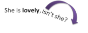

Question tags

 |
Forming tags |
One of the ways of making questions in English is the use of question tags. Some examples (tags in black):
|
|
 |
Task 1: These examples demonstrate
the essential rules for forming
question tags. Focus on:
|
- These are all examples of balanced tags.
A negative sentence takes a positive tag and vice versa:
She doesn't understand, does she? (negative + positive)
Mary can come too, can't she? (positive + negative)
Not all tag forms are balanced as we shall see. - With main or lexical verbs such as like,
hate, enjoy, do, arrive etc., we use the auxiliary verb do
in the tag, providing the verb is in the present simple or past
simple tense:
He didn't go, did he?
She smokes too much, doesn't she? - With modal auxiliary verbs like can, must, could etc., we
simply invert the verb and the subject to make a tag:
They couldn't see her, could they?
The play should be popular, shouldn't it? - With the verb to be,
whether it is an auxiliary or a main verb, we simply invert the
order of subject and verb to make the tag:
You are John, aren't you? (as a main identifying verb)
You aren't alone, are you? (as a main verb with an adjective complement)
You are working too hard, aren't you? (as an auxiliary forming the progressive)
She was arrested, wasn't she? (as an auxiliary forming a passive voice sentence) - With the verb to have
the situation is slightly more complicated:
When it is an auxiliary forming a tense, we treat it like to be, inverting the subject and the verb:
She has arrived, hasn't she?
She had left already, hadn't she?
When it functions as a main verb, meaning something like possess, both forms are possible:
They have a lot of money, don't they?
They have a lot of money, haven't they?
They don't have much money, do they?
They haven't much money, have they?
But, when we insert got after the verb, only the inverted form is possible:
We haven't got a lot of time, have we?
not
*We haven't got a lot of time, do we?
American and British usage differs in some respects here because AmE uses got less frequently in this sense.
That is actually rather a long list of rules and some are not simple. It's an area to treat carefully and piecemeal in the classroom.
 |
Other languages differ |
A few languages work like English with tags following grammatical rules for forming questions and negatives but many do not. For example:
Many languages, including Polish, German, Greek and others
can use a phrase or a single word meaning, roughly, True? or
Not
true? So, e.g.:
German: nicht wahr? [not true?], Spanish: ¿verdad? [true?],
Polish: prawda? [true?] or nieprawdaż? [not true?], Greek:
δεν είναι ετσι; (then eenay etsi?) [is it not
so?] and so on.
Some languages have a small range of words or phrases to ask for
agreement such as French: n'est ce pas? [isn't it]
or d'accord? [agree?].
In many languages there exists a small word used only for tag
questions such as Mandarin (ma?), German dialects (gell?)
Portuguese: né? and so on.
In most languages, the forms have become fossilised and do not vary in the complicated ways that the tags vary in English. This presents obvious problems for learners.
 |
Meaning |
intonation
Meaning is closely tied to intonation.
In many cases, the tone of voice falls on the tag, like this:
 |
 |
When the voice falls like this, the tag functions to mean
something like:
Please say you agree with me.
In
other words, it asks for confirmation that the speaker is correct
rather than signalling a true question.
Notice that the words lovely and late are also
stressed here.
When the tone rises, like this:
 |
Then the sentences function as true interrogatives. Notice that now we stress the verb because that is the focus of our attention.
intention
The communicative function of the sentence is drawn from the
first clause. Compare, e.g.:
You want a drink, don't you?
where the speaker is probably sure the answer will be 'yes'
with:
You don't want a drink, do you?
where a falling tone would imply the speaker expects a negative
response but a rising tone would indicate surprise.
The same thing happens with modal auxiliary verbs. Compare:
You couldn't do it for me, could you?
where a rising tone indicates a request, with:
You could do it for me, couldn't you?
where a rising tone indicates a request but a falling tone
indicates almost a command.
Unbalanced tagsSo ... |
Unbalanced tags have a different, but very common, structure. They involve positive + positive or negative + negative and have number of uses:
- Inference:
So, the car's over the road, is it?
i.e., I have figured this out from where we are walking - Sarcasm, suspicion or irony:
So you think you know me, do you?
i.e., you are presuming too much or
So, you don't believe me, don't you?
i.e., it's not your place to make judgements - Threat:
You'd take my money, would you? - Conclusion:
So, he likes the book, does he?
So, he hasn't had the time, hasn't he?
The sense of reaching a conclusion is also signalled by the word then. Technically speaking the word is a conjunct, linking what has been said before and implying that the hearer has inferred something from what has been said. In this case, the intonation patterns strongly suggest that the word is being used instead of a tag question. For example:
I'll give you a lift tonight if you like, then?
Oh, you are coming to the party, then?
In all of these the tone usually rises on the tag.
The use of an introductory So ... in these sorts of utterances is extremely common. Don't try to teach the area without making that clear.
 |
Irregularities and complications |
There are a few irregular forms to be wary of.
- Negating the verb be is irregular so the tags used
with it are also irregular.
If the first statement starts with I, the tag is formed with aren't:
I'm here, aren't I?
This does not work the other way round:
I'm not invited, am I?
not
*I'm not invited, are I?
(amn't I? exists in some dialects.)
When the negative tag is used with the first person, only the contracted form is allowable so we get:
I'm playing, aren't I?
but not
*I'm playing, are not I?
This causes trouble when trying to use formal unabbreviated language and the only alternative is:
I'm playing, am I not?
which sounds far too formal for many people.
When the first clause is negative, no issues arise and we allow:
I'm not playing, am I?
but learners may carry over the negative tag form, logically, and produce:
*I'm not playing, are I? - Some consider a tag formed with may to be unusual
or stilted:
Joan may come, mayn't she?
The preference here is often to exchange may for could/might, when talking about possibility:
She could/might be here early, couldn't/mightn't she?
and can for may when talking about permission:
Mary can come, can't she? - Imperative forms
- Positive imperative forms (commands) take will
in the tag:
Be quite, will you?
which can be softened with would:
Be quiet, would you? - Positive imperative forms also take both
positive and negative tags with a slight change of emphasis:
Be quiet, won't you? (pleading)
Be, quiet, will you (command imperative)
but this is not allowed with would:
*Be quiet, wouldn't you? - Negative commands (i.e., prohibitions) take no tag so we
can't say:
*Don't touch it, will you?
(Although You won't touch it, will you? is fine.) - Real imperatives are used with a rising tone and both
positive and negative tags but a falling tone with a
negative tag denotes concern. Compare:
Drive carefully, will you? (rising tone indicates irritation and is an imperative)
Sit still, won't you? (rising tone indicates irritation and is an imperative)
Drive carefully, won't you? (falling tone indicates concern rather than an imperative)
- Positive imperative forms (commands) take will
in the tag:
- Complex tenses
When we make a tag question with a complex tense (i.e., one that has more than one auxiliary verb), it is the first auxiliary which is used in the tag:
He hasn't been working too hard again, has he?
He won't have arrived yet, will he? - Pronunciation
It is rare for weak forms of vowels to occur in tags. The verb can is usually contracted to/kən/ in connected speech but in the tag, it retains its full pronunciation as /kæn/. E.g.:
I can come, can't I? is usually transcribed as /ˈaɪ kən kʌm ˈkɑːnt aɪ/ but
I can't come, can I? is usually /ˈaɪ kɑːnt kʌm ˈkæn aɪ /
 |
Use |
Tag questions are almost solely used in informal spoken language
or written language which resembles spoken language (such as informal emails).
As we saw above, under meaning, they can be simple statements
requiring only confirmation, real questions or expressions of
inference,
sarcasm, threat, reprimand or conclusion.
To make sure you have this, try a test.
 |
Teaching tag questions |
Very often, tags questions are used to initiate or maintain a
conversation and are very helpful to learners who sometimes struggle
to achieve this.
They are, however, quite complicated so should be approached in a
piecemeal fashion. One lesson will not be enough.
 |
context |
- Formality
As was noted under use, above, tags are a feature of informal, spoken language so that is the setting in which they should be presented or practised. Written exercises can be a way of focusing learners carefully on form but it is not a natural way to practise question tags.
Dialogues such as:
and so on, are helpful to set scenes and emphasise both that tags are used as ice-breakers in conversation and are informal.A It's cold, isn't it? B Yes, isn't it? A The 51 should be here by now, shouldn't it? B Well, it's Sunday. It's a reduced timetable, isn't it? A You'd think they'd run a proper service, though, wouldn't you? - Function
What is in the mind of the speaker is very important. You can't teach question tags without making the speaker's intentions clear.
Remember that intonation plays a vital role in getting meaning across.
In the little dialogue above, the opening comment almost certainly has a falling tone on the tag because it's an ice-breaker. Thereafter, it all depends on the amount of knowledge a speaker has:
If speaker A knows the timetable and is just making conversation, shouldn't it? will have a falling tone. If the speaker is truly asking for information, the tone will rise.
If speaker B knows about Sunday timetables, the tone on the tag will fall, but if she/he is uncertain, the tone will rise.
An awareness raising task might be something like:
Of course, you can vary the way the arrows point and make all sorts of other meanings. If you have an interactive whiteboard, that's a useful tool but this can be done with cut-out arrows placed on a handout or stuck to a whiteboard.Look at the tone of voice. Are the speakers sure or not? In this dialogue the speakers are just making conversation. Neither speaker asks a real question – they both just want the other person to say they are right. They both know the timetable and they are both unhappy with the poor service. In this dialogue, apart from the first comment, the speakers are asking real questions or saying they are surprised at how cold it is. They do not know the timetable and they are complaining about the service.
If you can record the dialogue naturally in a few ways and get learners to place the arrows pointing the way they hear and then get them to adjust them and test each other's intonation and understanding of speaker intention, that's even better.
Notice that these two dialogues only focus on balanced tags with the verb be and two modal auxiliary verbs. You can adapt it to include complex tenses and unbalanced tags but only at higher levels. - Form
The form of question tags, especially for learners whose languages are very different in this area is actually quite hard to learn and produce naturally. Learners need lots of focused practice and some drilling, possibly.
It's easy to provide this with gap-fill, completion exercises and so on but be careful not to overload learners, especially at lower levels, with too many rules and forms. For a couple of ideas in this area, look at the grammar exercises for learners at A1/A2 level or at a mixed tag exercise for slightly higher-level learners.
Check the five rules at the start of this guide and focus on them one by one initially. Later, you can mix them up but until the learners are confidently producing accurate tags in each area, that is perilous.
Here's a suggested way to focus:- Start with balanced tags. Negative + Positive and Positive + Negative.
- Focus on to the use of be and have:
It's cold, isn't it?
You aren't wearing a coat, are you?
You haven't got a spare one, have you? - Focus on modal auxiliary verbs:
I can't borrow hers, can I?
You could go inside, couldn't you? - Focus on main verbs and do, does, did:
You didn't bring a hat, did you?
etc. - Only when the above have been mastered should you focus at more advanced levels on functions such as inference, conclusion, sarcasm or threat.
| Related guides | |
| negation and questions | this is a general guide covering some peculiarities of English |
| wh-questions | an essential guide to a different form of question making |
| grammar exercises for learners | for some examples of the kinds of exercises you might want to use in class |
| tag exercise | for slightly higher-level learners |